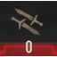

Ability Tree Strategies Signs Ability Branch
 Signs (Ability Branch: 79 Points)
{kind=link}
Geralt can utilize magic from five magic signs, all of which have important uses in and out of combat. The Signs Ability branch dedicates one upgrade path for each sign, and within each path there are alternate Sign modes that change how a Sign is used (and are utilized by holding instead of tapping your Sign button).
{kind=link}
Aard Sign Abilities (4 Abilities, 16 Points)
{kind=link}
{kind=link}
A directed blast of telekinetic energy that staggers opponents, leaving them open for a subsequent attack.
Far-Reaching Aard (3 Levels)
{kind=link}
Increases Aard’s range by the following yards:
| Level | Range (Yards) |
|---|---|
| 1 | +1 (Yard) |
| 2 | +2 (Yards) |
| 3 | +3 (Yards) |
| Points in branch needed to unlock: 0 | |
Notes: Remember that an unimproved Aard attack causes foes to stumble; you’re just increasing the range of the attack. Choose this if you wish to focus on the Aard Sign, either as a Signs build, or usually with Combat abilities, as keeping a foe off-balance allows you to quickly follow up with a sword strike. At higher levels, you can cast Aard earlier, which is more beneficial (quicker Stamina regeneration, for example).
Aard Sweep (3 Levels)
{kind=link}
{kind=link}
Alternate Sign Mode: Aard strikes all opponents in a certain radius. However, the Knock-down chance is lowered (until Level 3):
| Level | Knock-down Chance (%) |
|---|---|
| 1 | 21 (% lower) |
| 2 | 17 (% lower) |
| 3 | 0 (As normal Aard strike) |
| Points in branch needed to unlock: 6 | |
Notes: When fully upgraded, this can be an excellent ability that synergizes well with Combat-centric archetypes. Enemies all around Geralt can be pushed back or knocked over instead of a single one; which is well worth it in terms of crowd control. Also explore the Blood and Wine Mutations, as the infamous Piercing Cold shatters foes that fall over into fragments, instead of causing them to fall, and freeze others that are still standing!
Aard Intensity (5 Levels)
{kind=link}
Increases Aard Sign intensity by the following amounts:
| Level | Increase (%) |
|---|---|
| 1 | 5% |
| 2 | 10% |
| 3 | 15% |
| 4 | 20% |
| 5 | 25% |
| Points in branch needed to unlock: 18 | |
| Level | Time Slowed by (%) |
|---|---|
| 1 | 15% |
| 2 | 30% |
| 3 | 45% |
| Points in branch needed to unlock: 0 | |
Notes: This is always handy to have in archetypes where Aard is your primary focus, and can stack with equipment or other abilities that increase your Aard, such as Glyphs and Order of the Flaming Rose armor. If you enjoy knocking foes over or staggering them, this increases that potency. Almost every foe on horseback falls at your Aard strikes, and knocked over foes are easily executed with your swords as they lie prone.
Shock Wave (5 Levels)
{kind=link}
Increases the damage dealt by Aard to the following amounts:
| Level | Damage Dealt (points) |
|---|---|
| 1 | 40 (points) |
| 2 | 80 (points) |
| 3 | 120 (points) |
| 4 | 160 (points) |
| 5 | 200 (points) |
| Points in branch needed to unlock: 28 | |
Notes: Though this requires a lot of points to even unlock, and is used by those mainly focused on this Sign, it is worthwhile if you wish to augment damage inflicted by your swords, bombs, crossbow, or other stacked bonuses. If you’ve made the proper advancements in the Signs Branch of the Ability tree, as well as utilizing Rage Management and can consistently cast Aard, you’re easily able to keep multiple foes at bay while whittling down their health. However, at higher levels, there are quicker ways to damage foes.
Igni Sign Abilities (4 Abilities, 18 Points)
{kind=link}
A directed fiery blast that damages enemies. Damage scales with Sign intensity.
Melt Armor (5 Levels)
{kind=link}
Damage dealt by Igni also permanently weakens enemy Armor. Effect scales with Sign intensity up to a maximum percentage, as follows:
| Level | Maximum (%) |
|---|---|
| 1 | 15% |
| 2 | 30% |
| 3 | 45% |
| 4 | 60% |
| 5 | 75% |
| Points in branch needed to unlock: 0 | |
Notes: This improvement to Igni is a great asset to offensive adventurers; and fully upgrading it removes three-quarters of a foe’s armor, improving Geralt’s damage-dealing capacity in any fight. It can also be partnered with other Igni abilities, such as Firestream, for a more targeted removal. This also tends to remove shields more quickly than other techniques. However, it is less useful against foes that are tough enough without armor.
 Firestream (3 Levels)
Firestream (3 Levels)
Alternate Sign Mode: Emits a continuous stream of fire that damages enemies. Stamina cost is reduced by the following amount:
| Level | Stamina Cost Reduction (%) |
|---|---|
| 1 | 0% |
| 2 | 25% |
| 3 | 50% |
| Points in branch needed to unlock: 6 | |
Notes: Hugely entertaining, this alternate Sign mode requires you to “equip” this ability in a slot, before holding down the Signs button and launching your stream of fire at a foe. Instead of regular Igni, which hits in an arc, this is for individual immolation, and keeps the victim in a reasonably stationary position, too. Remember to invest in Rage Management if you find yourself running out of Stamina. Unless you’re fully invested in Igni, don’t expect this to cause any creature to topple over in a great gout of fire; use Firestream to weaken more powerful foes, before stepping in with swords.
Igni Intensity (5 Levels)
{kind=link}
Increases Igni Sign intensity by the following amount:
| Level | Intensity Increase (%) |
|---|---|
| 1 | 5% |
| 2 | 10% |
| 3 | 15% |
| 4 | 20% |
| 5 | 25% |
| Points in branch needed to unlock: 18 | |
Notes: If you’re finding that Firestream or your normal Igni offensive attacks aren’t getting the job done, and need more flaming damage in your repertoire, spend some points on Igni Intensity. Also look for enchantments and equipment that help increase Sign intensity too, as these bonuses stack. Simply find a couple of Bandit Camps, and compare the damage you cause before and after Igni Intensity is equipped; at Level 5 this can really roast foes, even the larger monsters!
Pyromaniac (5 Levels)
{kind=link}
Increases the chance to apply Burning by the following amount:
| Level | Burning Chance (%) |
|---|---|
| 1 | 20% |
| 2 | 40% |
| 3 | 60% |
| 4 | 80% |
| 5 | 100% |
| Points in branch needed to unlock: 28 | |
Notes: An often-overlooked effect of Igni is the continuous burning damage, which is simply extra damage over time, for a few seconds until the foe either dies (which happens occasionally with weaker foes, depending on the intensity) or you attack an enemy (or use Aard), and the fire goes out. As you likely want to slay foes quickly, rather than watch them stagger around on fire, this isn’t a necessary ability to crave. But it does allow you to easily deal with crowds, lighting folks on fire before turning and concentrating on other enemies. It is also helpful when targeting airborne enemies like the Griffin.
Yrden Sign Abilities (4 Abilities, 15 Points)
{kind=link}
Magic trap that slows enemies who enter its area of effect.
 Sustained Glyphs (2 Levels)
Sustained Glyphs (2 Levels)
{kind=link}
Increases Sign duration by the following time (in seconds). Number of alternative mode charges changes. Number of standard mode traps changes; all to the following amounts:
| Level | Time Increase (Seconds) | Mode Charges | Mode Traps |
|---|---|---|---|
| 1 | 5 (Seconds) | 7 | 1 |
| 2 | 10 (Seconds) | 9 | 2 |
| Points in branch needed to unlock: 0 | |||
Notes: Allow for more tactical battlefield herding of foes through the quagmire of a magical circle. Sustained Glyphs adds a number of helpful improvements, designed with other Yrden abilities in mind. The increase in time is most helpful, as it slows enemies down for longer, allowing you to strike them more leisurely. Mode Charges increases the potency of Magic Trap, so it’s recommended you equip both abilities to make full use of this. At Level 2, this grants you a second trap, effectively doubling the space or enabling you to cast Yrden more frequently, or overlapping with previous circles. All are designed to slow down and damage foes.
Magic Trap (3 Levels)
{kind=link}
Alternate Sign Mode: Damages and slows all enemies within a specific yard radius. Destroys projectiles passing through this area. Damage increases by the following amount:
| Level | Radius (Yards) | Damage Increase (%) |
|---|---|---|
| 1 | 10 (Yards) | 0 (%) |
| 2 | 12 (Yards) | 25 (%) |
| 3 | 14 (Yards) | 50 (%) |
| Points in branch needed to unlock: 6 | ||
Notes: A useful alternate mode as foes are wounded as well as slowed down, and projectiles are removed. It’s a great way to defend yourself without lifting a sword, and an excellent method of nullifying a ranged attacker. The increase in the affected area over the normal version of Yrden enables you to slow down larger groups or foes. Partner this with Sustained Glyphs for multiple mode charges.
Yrden Intensity (5 Levels)
{kind=link}
Increases Yrden Sign intensity by the following amount:
| Level | Increase (%) |
|---|---|
| 1 | 5% |
| 2 | 10% |
| 3 | 15% |
| 4 | 20% |
| 5 | 25% |
| Points in branch needed to unlock: 18 | |
Notes: If you’re thinking Yrden isn’t powerful enough, and enemies can quickly escape the sluggishness of the traps you’re laying for them, then make a concerted effort to increase your Signs and Yrden Intensity using the Glyph of Yrden, Griffin armor, Griffin School Techniques, Mutagen slots, and this ability. As your Yrden sign increases, you inflict more damage, slow foes down dramatically to the point they are almost frozen, and you may never need to take damage again!
Supercharged Glyphs (5 Levels)
{kind=link}
Enemies under the influence of Yrden lose a set number of Vitality or Essence points per second, as follows:
| Level | Points Loss (/Second) |
|---|---|
| 1 | 10 (/Second) |
| 2 | 20 (/Second) |
| 3 | 30 (/Second) |
| 4 | 40 (/Second) |
| 5 | 50 (/Second) |
| Points in branch needed to unlock: 28 | |
Notes: By the time you reach this ability, you may have enough Yrden Intensity to remove foes by using Magic Trap alone, making this ability a little less useful. But having foes stagger through your trap while dropping more Vitality or Essence is always recommended, and if you can keep Yrden functioning, you can watch foes fall before even reaching you! The drawback? Your sword’s damage-per-second is likely to be a lot higher than this, especially if you’ve invested points in combat abilities.
Quen Sign Abilities (4 Abilities, 16 Points)
{kind=link}
Protective shield that lasts until it has absorbed damage totaling 4% of maximum Vitality.
 Exploding Shield (3 Levels)
Exploding Shield (3 Levels)
Quen shield pushes opponents back and deals damage when it breaks, with the following additional benefits:
| Level | Benefit |
|---|---|
| 1 | None |
| 2 | Deals damage when it breaks |
| 3 | Deals damage when it breaks, chance for knock-down |
| Points in branch needed to unlock: 0 | |
Notes: If you’re feeling aggressive, you can be a little more reckless with this ability active: As the shield breaks, foes are knocked back and a knock-down chance occurs, allowing you to easily counter or press attacks against lightweight opponents. The space the explosion gives you between yourself and the foe allows you to time an attack. This also makes it easier to know when Quen has run out!
Active Shield (3 Levels)
{kind=link}
Alternate Sign Mode: Maintaining an active shield. Blocking attacks drains Stamina. Damage absorbed by the shield restores player Vitality. Additional Shortfall or Benefit:
| Level | Shortfall/Benefit |
|---|---|
| 1 | Maintaining it drains Stamina (Shortfall) |
| 2 | Maintaining it drains 50% less Stamina (Benefit). |
| 3 | Maintaining it does not drain Stamina (Benefit). |
| Points in branch needed to unlock: 6 | |
Notes: As long as you have the Stamina to maintain this alternate mode, this ability works: If you eat food or take a healing potion, then begin channeling this, Geralt can regenerate his Vitality in relative safety even amongst his enemies. Take this ability as soon as you can, and press the Signs button down to activate it (once the ability is equipped in the Character Menu, of course!). When your Signs Intensity increases, or if you’re using Rage Management that uses Adrenaline if Stamina runs out, you have an exceptional shield and healing spell in one!
Quen Intensity (5 Levels)
{kind=link}
Increases Quen Sign intensity by the following amount:
| Level | Intensity (%) |
|---|---|
| 1 | 5% |
| 2 | 10% |
| 3 | 15% |
| 4 | 20% |
| 5 | 25% |
| Points in branch needed to unlock: 18 | |
Notes: Are you finding your Quen shield only holds up to one enemy strike? Are you constantly trying to recast Quen? Then make some decent headway into increasing your general Signs Intensity (using Mutagens in your Character Menu, employing the Quen Glyph, and using armor with Sign Intensity, like Griffin armor). Choose Griffin School Techniques: All this increases your Quen Intensity, toughening your shield in the process. Then expect it to last longer during battles, usually an exceptional help to your longevity!
Quen Discharge (5 Levels)
{kind=link}
Reflects an amount of absorbed damage back to the attacker, as follows:
| Level | Reflected damage (%) |
|---|---|
| 1 | 5% |
| 2 | 10% |
| 3 | 15% |
| 4 | 20% |
| 5 | 25% |
| Points in branch needed to unlock: 28 | |
Notes: Though this forces you to “take a hit” and weaken your Quen shielding, it also reflects up to a quarter of a foe’s strike back at them, which is particularly satisfying if the enemy’s attacks are hard-hitting! Obviously, you can’t rely on this to finish a foe, but it is handy to have Quen cause damage as well as your offensive combat techniques, whether they are Sign or sword-based in nature.
Axii Sign Abilities (4 Abilities, 14 Points)
{kind=link}
Charms an opponent’s mind, temporarily eliminating him from combat. Effect Duration: 7 seconds.
 Delusion (3 Levels)
Delusion (3 Levels)
Target does not move toward Geralt while he is casting Axii. Increases the effectiveness of Axii in dialogues. Additional effects are as follows:
| Level | Additional Effects |
|---|---|
| 1 | None |
| 2 | Reduces Axii casting time |
| 3 | Reduces Axii casting time. Failed Axii attempts stagger target (combat). |
| Points in branch needed to unlock: 0 | |
Notes: Do you want to seek alternate solutions to problems when verbally sparring (rather than physically sparring) with characters? Three points spent here guarantees that any dialogue choice that can be influenced by Axii always goes in Geralt’s favor. Outside of conversations, this serves to stall foes, or stagger them at Level 3. Also use this to slow a foe enough to attack from the side or behind (where you can deal additional damage with a Doppler decoction, for example); try this on a bear before challenging something more monstrous! It is also used to tame horses, calm Roach, and bewilder peasants.
Puppet (3 Levels)
{kind=link}
Alternate Sign Mode. Targeted enemy briefly becomes an ally and deals more damage, as follows:
| Level | Enemy Damage (%) |
|---|---|
| 1 | 20% more Damage |
| 2 | 40% more Damage |
| 3 | 60% more Damage |
| Points in branch needed to unlock: 6 | |
Notes: Remember you need to hold down the Signs button in order to attempt this amusingly potent ability: with a glow of Axii behind the eyes, your chosen foe starts to attack his previous brethren (and their name turns from red to orange), causing no end of chaos, and helping you in the process! This helps immensely, allowing you to turn troublesome foes (such as Bandit leaders, or those with two-handed weapons or shields, or archers) into allies. Another fine trick is to cast it twice on airborne foes; the second time it stuns them out of the sky, allowing you to skewer them easily. This also nullifies large foes for a few seconds (depending on your Level and that of the opponent); so try it on a Cyclops for example; effectively stunning it before trying a hard-hitting attack.
 Axii Intensity (5 Levels)
Axii Intensity (5 Levels)
Increases Axii Sign intensity by the following amount:
| Level | Intensity (%) |
|---|---|
| 1 | 5% |
| 2 | 10% |
| 3 | 15% |
| 4 | 20% |
| 5 | 25% |
| Points in branch needed to unlock: 18 | |
Notes: Just like the other Intensity abilities for other Signs, this enhances your already-impressive offense techniques when it comes to Axii. If you enjoy flummoxing foes with Delusion or Puppet, for example, and you wish the Cyclops you’re controlling wouldn’t shake off the effects of Puppet quite so quickly, then select this. Usually, Signs such as Yrden and Quen are utilized more often, so this ability is more for archetypes with Axii as their main focus. Don’t forget your Axii Glyph and equipment that raises the general Intensity of all your Signs, which stacks with this.
Domination (3 Levels)
{kind=link}
Two opponents can be influenced by Axii at the same time, though the effect is weaker by the following amount:
| Level | Weakness (%) |
|---|---|
| 1 | 50% |
| 2 | 25% |
| 3 | 0% |
| Points in branch needed to unlock: 28 | |
Notes: Unless you’re insisting on murdering city guards just for fun, by the time you get to unlock Domination, you may not need to influence two opponents rather than one, as a single foe acting confused or fighting on your behalf (or casting Delusion or Puppet twice) is almost as effective as Domination. But for additional crowd control, and true mastery of Axii in all its forms, this is a good addition.
The Witcher® is a trademark of CD PROJEKT S. A. The Witcher game © CD PROJEKT S. A. All rights reserved. The Witcher game is based on a novel by Andrzej Sapkowski. All other copyrights and trademarks are the property of their respective owners. Learn more at thewitcher.com.